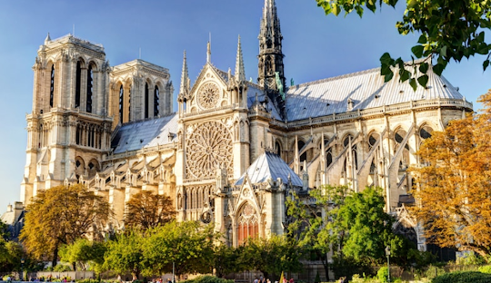
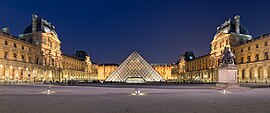

Paris, city and capital of France, situated in the north-central part of the country. People were living on the site of the present-day city, located along the Seine River some 233 miles (375 km) upstream from the river’s mouth on the English Channel (La Manche), by about 7600 BCE. The modern city has spread from the island (the Île de la Cité) and far beyond both banks of the Seine.
.jpg)
The City of Paris is the centre of the Île-de-France region, or Paris Region, with an official estimated population of 12,271,794 inhabitants on 1 January 2023, or about 19% of the population of France.[2] The Paris Region had a GDP of €765 billion (US$1.064 trillion, PPP)[8] in 2021, the highest in the European Union.[9] According to the Economist Intelligence Unit Worldwide Cost of Living Survey, in 2022, Paris was the city with the ninth-highest cost of living in the world.[10]
Paris is a major railway, highway, and air-transport hub served by two international airports: Charles de Gaulle Airport (the third-busiest airport in Europe) and Orly Airport.[11][12] Opened in 1900, the city's subway system, the Paris Métro, serves 5.23 million passengers daily;[13] it is the second-busiest metro system in Europe after the Moscow Metro. Gare du Nord is the 24th-busiest railway station in the world and the busiest outside Japan, with 262 million passengers in 2015.[14] Paris has one of the most sustainable transportation systems[15] and is one of the only two cities in the world that received the Sustainable Transport Award twice.[16]
Paris is especially known for its museums and architectural landmarks: the Louvre received 8.9 million visitors in 2023, on track for keeping its position as the most-visited art museum in the world.[17] The Musée d'Orsay, Musée Marmottan Monet and Musée de l'Orangerie are noted for their collections of French Impressionist art. The Pompidou Centre Musée National d'Art Moderne, Musée Rodin and Musée Picasso are noted for their collections of modern and contemporary art. The historical district along the Seine in the city centre has been classified as a UNESCO World Heritage Site since 1991.
The Louvre (English: /ˈluːv(rə)/ LOOV(-rə)),[4] or the Louvre Museum (French: Musée du Louvre [myze dy luvʁ] ⓘ), is a national art museum in Paris, France. It is located on the Right Bank of the Seine in the city's 1st arrondissement (district or ward) and home to some of the most canonical works of Western art, including the Mona Lisa, Venus de Milo, and Winged Victory. The museum is housed in the Louvre Palace, originally built in the late 12th to 13th century under Philip II. Remnants of the Medieval Louvre fortress are visible in the basement of the museum. Due to urban expansion, the fortress eventually lost its defensive function, and in 1546 Francis I converted it into the primary residence of the French kings.[5]
The building was extended many times to form the present Louvre Palace. In 1682, Louis XIV chose the Palace of Versailles for his household, leaving the Louvre primarily as a place to display the royal collection, including, from 1692, a collection of ancient Greek and Roman sculpture.[6] In 1692, the building was occupied by the Académie des Inscriptions et Belles-Lettres and the Académie Royale de Peinture et de Sculpture, which in 1699 held the first of a series of salons. The Académie remained at the Louvre for 100 years.[7] During the French Revolution, the National Assembly decreed that the Louvre should be used as a museum to display the nation's masterpieces.